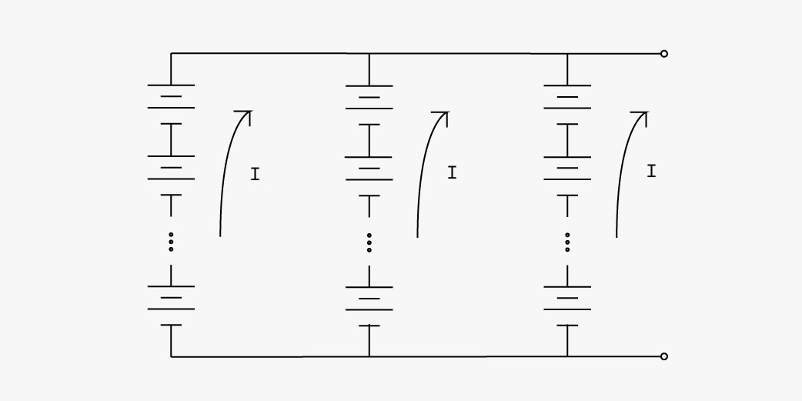
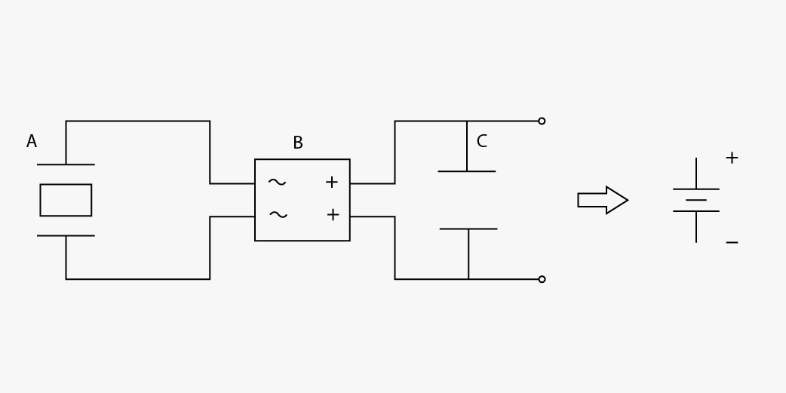
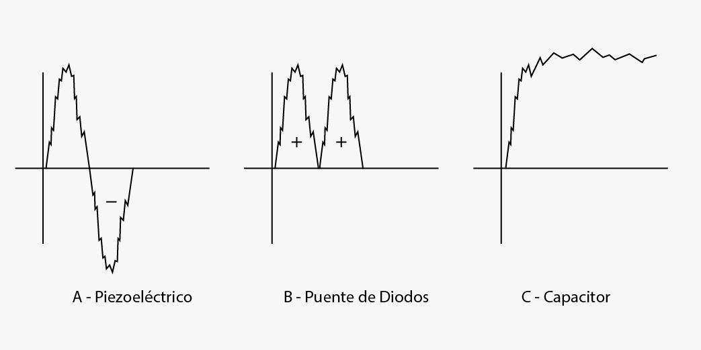

Tapete generador de energía
Decidimos aprovechar el movimiento de las personas al transitar el lugar para generar energía mecánica implementando un tapete generador de energía. La piezoelectricidad es una propiedad que puede incluirse en la lista de alternativas para generar energía renovable y limpia, se presenta en algunos materiales sólidos como cristales y cerámicas para producir electricidad a partir de su deformación. Cuando una fuerza se ejerce sobre el material la distribución de las cargas cambia concentrando las positivas en un lado y las negativas en otro; esta diferencia de potencial se usa para producir corriente eléctrica.
Este tapete consiste en un mecanismo piezoeléctrico, el cual funciona por medio de una baldosa encargada de captar y almacenar la energía producida por las pisadas, produciendo electricidad con un nivel bajo de potencia para ser implementado en los espacios que dirigen a las transportadoras que yacen a lo largo de éste transborde.
Con la energía obtenida mediante este sistema cubrimos necesidades como el envío de señales inalámbricas, la iluminación que compone la exposición, entre otras posibles ideas emergentes. Para el desarrollo de este proyecto, uno de los aspectos más importantes a considerar fue el aprovechamiento de energías limpias, de este modo, además de brindar una experiencia única e innovadora, hace del proyecto una opción ambientalmente responsable y económicamente favorable.


